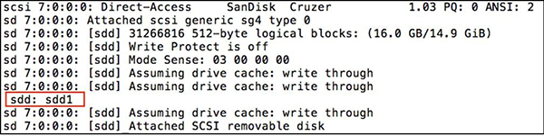
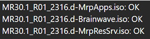

- 00000018WIA30314450GYZ
- id_20219493.10
- May 4, 2023 5:26:05 PM
Checking the software media integrity (Iso # Checksum)
USB Installer Media Checksum
Note: This procedure is only valid for systems running software version 30.1 and later.
- Open a command window and enter
su -to log on as root.Note: The Shell window can only be launched when the EA3 user is included in the authorized EA3 group. Users not in this EA3 group will not have access to launch the Shell window. If you are not logged on as the proper logon user, log out and then log back on as the correct EA3 user with the authorized permissions. - Run the following command to mount the USB drive:
mount /dev/sdd3 /mnt/usb.Note: If you get any errors, use dmesg to check where the USB mounts. Unplug and re-plug the USB into the host and run the command dmesg. The figure below shows an example output. The mount location varies and could be sdc/sdd/sde. Depending on your output, change the /dev/sdd3 to the one shown by dmesg output.Figure 1. Checking the USB mount 
- Run the following command to navigate to the USB installer media content:
cd /mnt/usb/SEAMARK. - Run the following command to check the integrity of the installation files:
find iso -type f -iname '*.sha256' -execdir sha256sum -c {} \;. For each .iso file, the status OK will show to indicate that the .iso file matched the checksum. If OK does not show, STOP the installation process and contact GE HealthCare Services for support.Figure 2. Installation files integrity check 
Application DVD Checksum
Note:
Refer to the MR Service Pack Software Matrix (DOC1667089), available from the online documentation library, and make sure the necessary service pack media (if any) is available. Do not start the software load until this media is available.
- Insert the Application DVD into DVD drive.
- Open a command window.Note: The Shell window can only be launched when the EA3 user is included in the authorized EA3 group. Users not in this EA3 group will not have access to launch the Shell window. If you are not logged on as the proper logon user, log out and then log back on as the correct EA3 user with the authorized permissions.
- Log on as root with the Signa default root password and run the following two commands:Note: If the checksum does not match with the data from the MR Service Pack Software Matrix (DOC1667089), STOP the installation process and contact GE HealthCare Services for support. Note that the output of the dd command “x.x MB/s (data transfer rate)” below may vary; this specific param does not have to match up with the number as shown below. Due to the data size of the application DVD, the dd command may take up to 15 minutes to complete.
# isosize -x /dev/sr0sector count: 1995763, sector size: 2048Note: The sector count and sector size here should be used in the dd command below.# dd if=/dev/sr0 bs=2048 count=1995763 conv=notrunc,noerror | sha256sum1995763+0 records in 1995763+0 records out 4087322624 bytes (4.1 GB) copied, 535.142 s, 7.6 MB/s 751cce6450ed619b65f19480eb46043746f17bb5004ac9ebb94d31b9b8acb2cb -
Service Pack DVD Checksum
Note:
Refer to the MR Service Pack Software Matrix (DOC1667089), available from the online documentation library, and make sure the necessary service pack media (if any) is available. Do not start the software load until this media is available.
- Remove the Application DVD and insert the Service Pack DVD into DVD drive.
- Run the following two commands:Note: If the checksum does not match with the data from the MR Service Pack Software Matrix (DOC1667089), STOP the installation process and contact GE HealthCare Services for support. Note that the output of the “dd” command “x.x MB/s (data transfer rate)” may vary; this specific param does not have to match up with the number as shown below.
# isosize -x /dev/sr0sector count: 188, sector size: 2048 (Note that the sector count and sector size here should be used in the dd command below.)# dd if=/dev/sr0 bs=2048 count=188 conv=notrunc,noerror | sha256sum188+0 records in 188+0 records out 385024 bytes (385 kB) copied, 0.254683 s, 1.5 MB/s 268b783b0d57b7f4db1e4ded301210cfec956ddbe1857f8c845d432347d0b6ab -